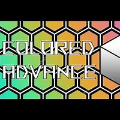
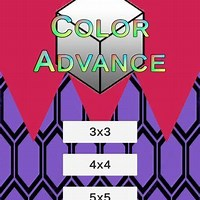

Colored Advance - a 3D 2048 Mobile Game
Colored Advance is a mobile puzzle game that reimagines the classic mechanics of 2048 in a 3D space. Instead of merging numbered tiles, players combine blocks based on matching colors, adding a visual and spatial twist to the original formula. The gameplay focuses on sliding and rotating pieces within a three-dimensional grid, requiring players to think not only about matches and positioning, but also depth and perspective. The result is a more dynamic, visually driven puzzle experience that builds on the simplicity of 2048 while introducing new layers of strategy through color-based merging and 3D movement.
View Video DemoUnity
C#
Mobile
Android

